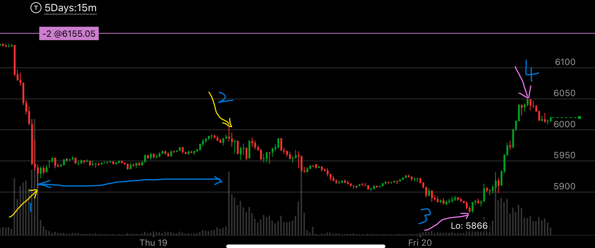
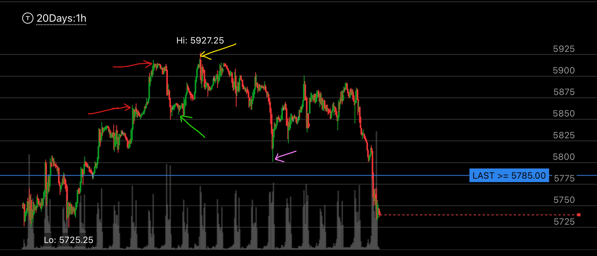

如何判断下跌中，它在底部停留很久还是很短时间
- 从新高快速下跌的时候，涉及走势反转。 在大盘下跌的时候，有时候，底部很深，在底部停留很久，这时候会出现真正的反转，有时候，底部停留时间很短。这时也可能是反转，也可能反弹到
比前一个低点更高的位置。这种反弹幅度极大，可能高达100点，甚至200或者300点，如果可以好好利用，那么可以极大的增加收益。这个要仔细判断，
不要错过更深的底部，也不要错过临时的大反弹。
- 判断在底部的时间，关键在于在前一个顶部的时间，在底部只有比前面的顶部更久，才能反转。 这种情况下，要注意那些在顶部时间很短，就创新低的走势。
这个“短”，可以短至几分钟，就下来，创新低。而如果前一个顶部时间很长，长达几个小时，或者一个晚上，这种时候，底部需要比这个时间更久才行，这时应该紧紧
拿住空头，以免错失良机。
- 如果在顶部一开始下跌很慢，后来很快，那么它反转的时候，也许需要减速，这样在底部就变得时间久了。
- 如果在顶部一开始下跌就很快，那么它反转的时候，就不需要很久，因为后面本身就会变慢，这样在底部就没有很久了

图示:
- 首先看两个黄色箭头，它的顶部持续时间很短，底部持续时间更短。但是关键是顶部。
- 看1~2 的时间以及2~3的时间，2~3 只是稍微长一点。说明这个下跌的力量不会很强。 会出现反弹
- 看3， 它先越过前面的低点，然后走平，然后创新低，这种就是典型的底部形态。
- 它从这个很短的顶部创了新低后（第一个紫色箭头），在底部出现更长时间的底部。这说明，它会反弹，而且这个底部不需要很久，只要稍微超过顶部时间就够了。
这时，应该在紫色的底部平仓空仓，然后反手做多。然后到了顶部再次做空，这样可以极大增加收益。
- 如果它在顶部时间很久，那么它在底部时间也会很久，才会出现真的底部。这时应该紧紧拿住空头，直到时间足够。

图示:
- 这个紫色箭头后，尖锐反弹，说明它未来一定会低于这个点
- 它反弹后，在上面震荡了5天，才下来，这样，它在下面也会停留很多天，才会反弹。 应该拿住空头，直到它稳定下来，再平仓，反手做多，甚至买call，加大收益
- 紫色箭头以后，它在上面震荡三天以上的时候，说明它在酝酿大跌，应该在它某次反弹幅度很大的时候，买put，加大收益